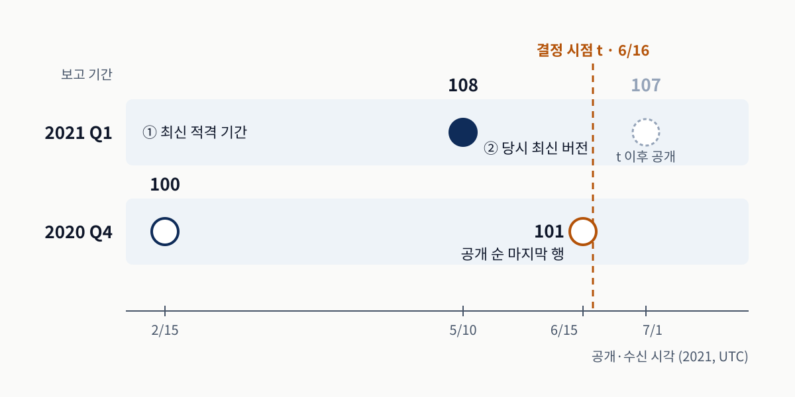
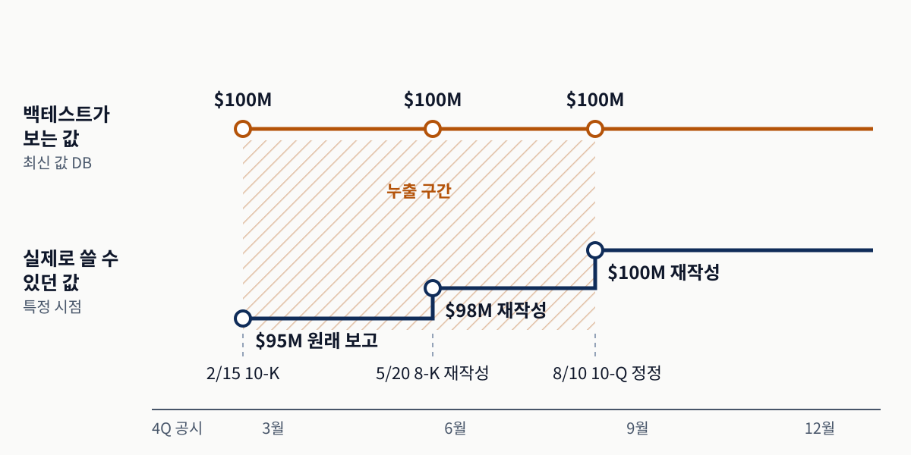
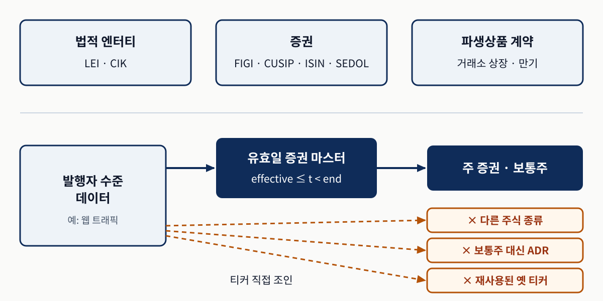
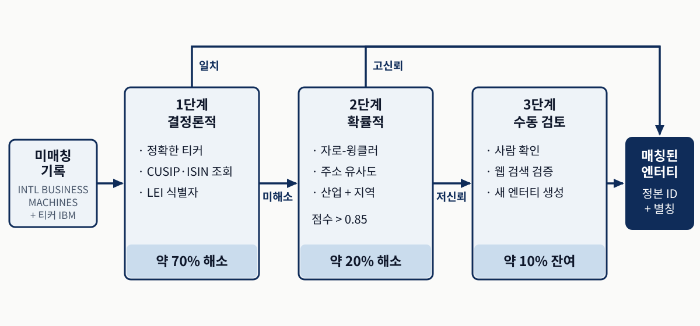
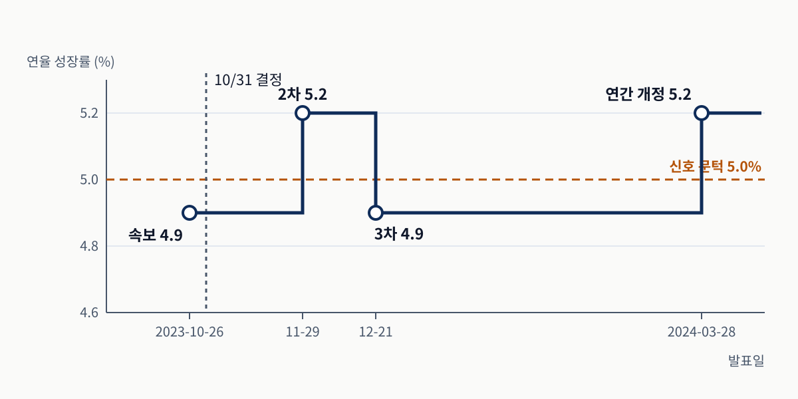
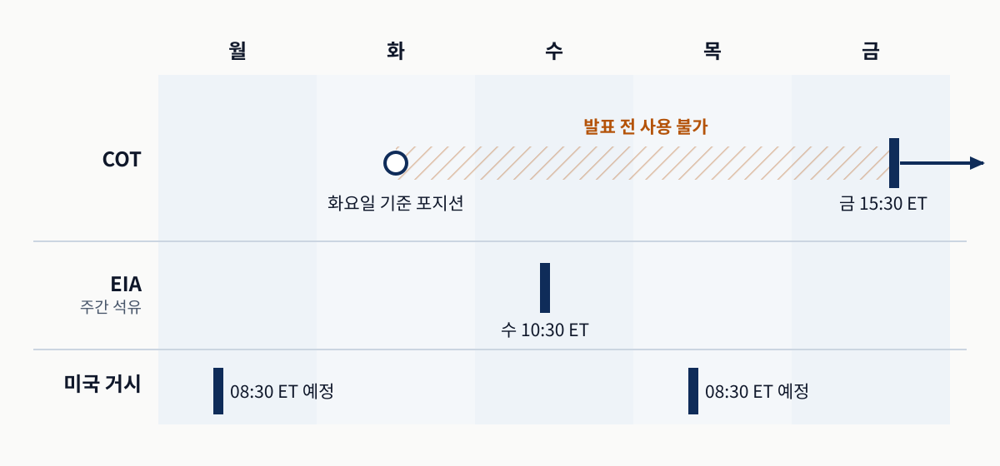
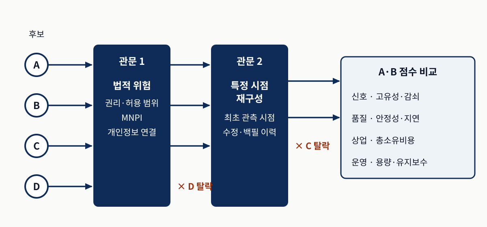
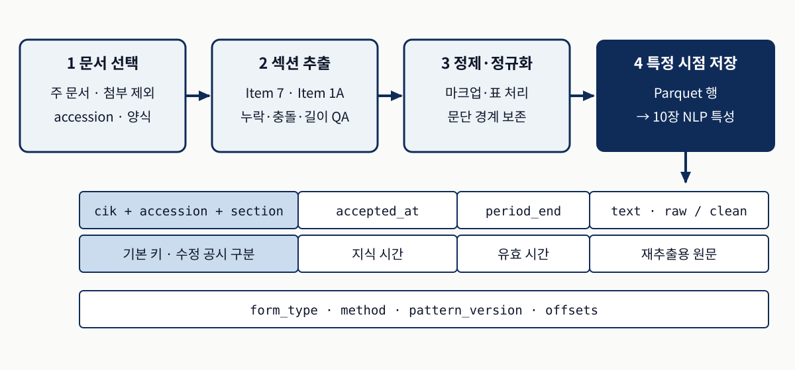

시간
결정 시점 t에 실제로 공개되어 있던 버전은 무엇인가?
트레이딩을 위한 머신러닝 3판 · Chapter 4
그날 알 수 있던 값을, 올바른 대상에 붙이는 파이프라인
이 데이터들은 나중에 고쳐 쓰이고, 출처마다 같은 회사를 다르게 부릅니다.
결정 시점 t에 실제로 공개되어 있던 버전은 무엇인가?
발행자·증권·계약 중 어느 층에, 그날 유효한 어떤 식별자로 붙이는가?
기존 특성 위에 거래 가능한 증분 정보가 있고, 법적 관문을 통과하는가?
가장 큰 실패 원인은 모델이 아니라 시간 일관성과 엔터티 일관성입니다.
4.1의 이중시간 모델이 뒤의 모든 절에 같은 방식으로 적용됩니다.
| 절 | 확인할 것 | 지키지 않으면 |
|---|---|---|
| 4.1 특정 시점 | 그날 공개된 버전 | 재작성 값이 과거로 누출 |
| 4.2 엔터티 | 올바른 층·유효 식별자 | 다른 회사 신호로 만든 알파 |
| 4.3 자산군 | 발표 시각·빈티지·롤 | 발표 전 수치·최종 수정치 |
| 4.4 대체 데이터 | 증분 신호·재구성·법적 위험 | 중복 대리변수·백필 성과 |
| 4.5 텍스트 | 섹션 경계·접수 시각 | 목차를 본문으로 저장 |
질문은 셋이지만 저장 원칙은 하나, "무슨 기간의 값을 언제 알았는가"입니다.
오늘 데이터베이스에 있는 값이 아니라, 과거 결정 시점에 쓸 수 있던 값을 어떻게 돌려주는가?
재작성·분류체계 변경·기업행위가 같은 기간의 여러 버전을 만듭니다.
같은 3분기 매출이 공시를 거치며 세 번 바뀌는 원서의 예입니다.
3분기 매출 9,500만 달러. 10월 결정에 쓸 수 있는 값은 이것뿐입니다.
9,800만 달러, 다시 1억 달러로 재작성됩니다. 최신 값 DB에는 1억 달러만 남습니다.
백테스트가 10월에 1억 달러로 P/E를 계산하면 그때 아무도 몰랐던 숫자로 매매합니다.
Luo et al. (2014)은 이런 데이터 처리 오류가 전략 성과를 뒤집을 수 있다고 보였습니다.
유효 시간은 "무슨 기간의 값인가", 지식 시간은 "그 버전을 언제 알 수 있었나"입니다.
p 보고 기간 · v 그 기간의 버전 · a(p,v) 공개·수신 중 늦은 시각.
t까지 공개된 가장 최근 기간 p*를 고르고, 그 기간에서 t 이전 최신 버전 v*를 고릅니다.
8-K 실적 발표보다 늦은 10-Q·10-K 접수 시각을 쓰면 늦게 아는 쪽으로 기웁니다.
새 버전은 옛 행을 덮어쓰지 않고 새 행으로 쌓아야 이 조회가 가능합니다.
오래된 분기의 정정이 새 분기 발표보다 늦게 오는 경우입니다.

가로축은 공개 시각, 두 줄은 보고 기간입니다.
공개 순 마지막 행은 101이지만 더 오래된 기간의 값입니다.
가이드 노트북의 합성 숫자입니다.
"공개일이 t 이전인 마지막 행"과 기준시점 조회는 다른 값을 돌려줄 수 있습니다.
출처마다 기준이 흔들리면 같은 파이프라인 안에서 누출 규칙이 달라집니다.
| 양식 | 권위 있는 타임스탬프 | 비고 |
|---|---|---|
| SEC | accepted_at 공시 접수 | 필요하면 더 이른 실적 발표도 추적 |
| 거시 | 공식 발표 시각(시간대 정규화) | ALFRED 빈티지 사용 |
| 원자재 | 기관 발표 시각 + 계약 롤 | EIA·USDA·CFTC 일정 |
| 암호화폐 | 블록 시간 + 최종성 + 수집 시간 | N회 확인 뒤에만 가용 |
XBRL Frames API의 "마지막 제출" 값은 스냅샷에는 편하지만 그 자체로는 PIT에 안전하지 않습니다.
재조직(최근 블록이 대체되는 사건) 전의 온체인 값은 확정된 사실이 아닙니다.
EDGAR는 대량 파일·REST API·Python 래퍼의 세 경로로 공시를 제공합니다.
| 파일 | 내용 | PIT 재구성에서의 역할 |
|---|---|---|
| SUB | CIK·양식·제출일·접수 번호 | 지식 시간과 버전 키 |
| NUM | XBRL 태그의 수치 값 | 유효 기간이 붙은 값 |
| TAG | 분류체계 태그 정의 | 같은 사실의 태그 대응 |
| DIM | 세그먼트·지역 세분화 | 합계와 부분 값 구분 |
2009년 이후 10-K·10-Q·8-K를 여덟 테이블로 담으며, Parquet으로 풀어 이중시간 DB를 쌓는 방식이 대개 가장 효율적입니다.
세 번째 열은 원서 표에 이 발표가 덧붙인 읽기 안내입니다.
PIT를 지켜도 회계기준·기업 재량·재작성·기업행위의 불일치가 남습니다.
분기 매출(구간)과 분기 말 현금(시점), 연결 합계와 부문 값을 섞으면 조용한 오류입니다.
시계열 중간에 SalesRevenueNet이 새 매출 태그로 바뀌어 분류체계 매핑이 필요합니다.
3:1 분할 뒤 과거 EPS를 3으로 나눕니다. 합병·분사는 계수로 해결되지 않습니다.
공시일은 제출 메타데이터에서, 유효 기간은 XBRL 내용에서 가져와 짝짓습니다.
같은 전략을 두 데이터로 돌리면 최신 값 쪽이 더 좋아 보이는 경우가 많습니다.

위 줄은 재작성된 1억 달러를 2월 15일부터 쓰지만 시장은 8월 10일까지 9,500만–9,800만 달러를 알았습니다. 그림의 날짜는 본문 예와 양식 순서가 달라 원리만 연결합니다.
벤더가 수정·정정 이력을 설명하지 못하면, 반대로 입증될 때까지 PIT가 아니라고 간주합니다.
2021년 거래일 252일 · 합성 분기 값 4개 · 발표 지연 39–46일 · 가이드 노트북 저장 출력
# timeline: 2021년 거래일 · wrong_rows/right_rows: 분기 값 표
wrong = pd.merge_asof(timeline, wrong_rows, on="date") # 기간 말 키
right = pd.merge_asof(timeline, right_rows, on="date") # 발표일 키
joined = wrong.merge(right, on="date")
joined["leaked"] = (joined.wrong_period.notna()
& joined.wrong_period.ne(joined.eligible_period))merge_asof는 각 거래일에 그 날짜 이전의 가장 최근 행을 붙입니다. 두 방식이 서로 다른 기간을 가리키는 날을 누출일로 셉니다.
다음 화면에서 누출이 첫 발표 전에만 생기는지 확인합니다.
앞 화면과 같은 252거래일·합성 분기 값입니다.
| 지표 | 값 | 읽는 법 |
|---|---|---|
| 발표 지연 | 39–46일, 평균 41.25일 | 기간 말 → 발표일 달력일 |
| 첫 발표 전 누출 | 29거래일 | 올바른 방식은 아직 값 없음 |
| 이후 분기 누출 | 81거래일 | 기간 말~발표일마다 반복 |
| 전체 | 110거래일 | 252일 중 약 44% |
합성 일정에서 나온 교육용 진단이며 실제 기업의 공시 지연이나 성과 차이를 추정한 값이 아닙니다.
첫 공시 전만 막는 지연 처리는 이후 분기의 누출을 그대로 남깁니다.
공개 시각과 수신 시각을 모두 통과한 행 중 최신 기간의 최신 버전을 고릅니다.
# facts: 기간·공개·수신 시각·값 4행 · t: 결정 시각
eligible = facts.loc[(facts.available_at <= t)
& (facts.received_at <= t)
& (facts.period_end <= t)]
pick = eligible.sort_values(
["period_end", "available_at"]).iloc[-1]| 결정(UTC) | 값 |
|---|---|
| 02-15 13:02 | 없음 · 13:05 수신 전 |
| 02-16 14:00 | 100 |
| 06-16 14:00 | 108 · 단순 방식은 101 |
| 07-02 14:00 | 107 |
노트북은 7월 정정을 추가해도 6월 16일 조회가 바뀌지 않음을 함께 검사해 PASS를 출력했습니다.
서로 다른 출처가 다르게 부르는 같은 회사를 어떻게 같은 대상으로 알아보는가?
결정론적 → 확률적 → 사람 검토로 단계를 올리고 모든 매핑에 유효 구간을 붙입니다.
CIK·UEI·가맹점 코드 중 어느 것도 크로스워크 없이는 티커로 이어지지 않습니다.
ZOOM VIDEO(ZM)를 ZOOM TECHNOLOGIES(옛 ZOOM, 현 ZTNO)와 섞으면 그 "알파"는 잡음입니다.
IBM 계약은 수십 개 자회사 명의로 와도 IBM에 붙어야 합니다.
분사해 독립한 Kyndryl의 계약은 IBM에 붙으면 안 됩니다.
정밀도를 우선하고, 불확실한 매칭은 자동 확정하지 않고 다음 단계로 넘깁니다.
"Apple"은 법적 엔터티·보통주·채권·선물 계약 중 무엇으로도 정당하게 해소됩니다.
| 식별자 | 층 | 메모 |
|---|---|---|
| LEI | 법적 엔터티 | 20자, ISO 17442 |
| CIK | EDGAR 신고 주체 | 상품까지 가려면 참조 테이블 |
| FIGI | 증권 | OpenFIGI 조회 API |
| CUSIP · ISIN · SEDOL | 증권 | 미국 · 글로벌 · 영국 |
프로덕션은 엔터티·증권·계약의 세 마스터 테이블을 시간 유효 매핑으로 잇습니다.
층을 고르지 않은 "식별자 매칭 성공"은 "올바르게 해소됨"과 같지 않습니다.
웹 트래픽은 발행자 수준, 수익률은 증권 수준에서 측정됩니다.

effective ≤ t < end를 통과한 조인입니다.
Class A·B, ADR, 옛 티커로 잘못 붙습니다.
유효일은 옛 티커만 막고 주 증권 규칙이 더 필요합니다.
발행자→증권 매핑을 유효일과 함께 명시적으로 유지하는 것이 원서의 해결책입니다.
누락은 커버리지를 줄이지만, 오매칭은 모든 하위 조인과 백테스트를 오염시킵니다.
레벤슈타인은 편집 횟수, 자로-윙클러는 앞부분 일치 가중, 자카드는 공통 토큰 비율입니다.
원서의 실무 예: 약 95% 이상 자동 승인, 85–95% 검토, 85% 미만은 주소·웹사이트로.
숫자는 보편 상수가 아닙니다. 레이블된 표본의 점수 분포로 맞춥니다.
원서는 "TESLA INC"와 "TESLA, INC."를 1편집이라 적지만 표시된 그대로면 2편집, 구두점을 지우면 0입니다.
정밀도를 먼저 확보하고, 에스컬레이션과 후보 생성으로 재현율을 올립니다.
공식 05_entity_resolution의 같은 질의 비교 · 저장 출력 · 재실행하지 않음
| 질의 | 퍼지 | 임베딩 최근접 | 코사인 |
|---|---|---|---|
| msft | 없음 | Microsoft | 0.53 |
| Amazon Web Services | 없음 | Amazon.com | 0.65 |
| Facebook Inc | 없음 | Meta Platforms | 0.35 |
| Google LLC | 없음 | Microsoft | 0.38 |
정답 0.35와 오답 0.38이 거의 같습니다. 최근접 후보는 항상 나오므로 이 구간은 3단계 사람 검토로 보냅니다.
검토 결정은 별칭·거부로 마스터에 다시 쓰고 검토자·시각·근거를 남깁니다.
마스터 테이블은 이름 변형과 식별자 매핑을 쌓아 갈수록 정확해집니다.
| id | 이름 | 티커 | cik | figi |
|---|---|---|---|---|
| 1001 | Tesla, Inc. | TSLA | 1318605 | BBG000N9MNX3 |
| 1002 | Apple Inc. | AAPL | 320193 | BBG000B9XRY4 |
원서 표에는 LEI 열도 있습니다(화면에서는 생략). 엔터티 식별자와 증권 식별자가 한 행에 있는 것은 단순화된 예라서, 주식 종류가 여럿이면 증권 행이 여럿 달립니다.
출처 식별자끼리 직접 조인하지 않고, 항상 마스터를 거칩니다.
티커는 재사용되고(ZOOM), 정체성은 리브랜딩(FB → META)으로 바뀝니다.
| id | 값 | effective_date | end_date |
|---|---|---|---|
| 1095 | FB | 2012-05-18 | 2022-06-08 |
| 1095 | META | 2022-06-09 | NULL |
end_date를 마지막 유효일로 읽고 t < end_date를 쓰면 6월 8일이 어느 행에도 속하지 않습니다. 배타 종료점은 다음 날로 두고 NULL은 열린 구간입니다.
다음 화면에서 반개구간 조회가 경계 시각을 어떻게 처리하는지 봅니다.
티커 XYZ가 2021-03-01 00:00 UTC에 issuer-A에서 issuer-B로 넘어가는 합성 마스터 · 저장 출력
# master: ticker·issuer_id·valid_from·valid_to 표
def resolve_ticker_at(master, ticker, t):
rows = master.loc[(master.ticker == ticker)
& (master.valid_from <= t)
& (master.valid_to.isna() | (t < master.valid_to))]
if len(rows) != 1:
raise ValueError("missing or ambiguous")
return rows.iloc[0].issuer_id| 조회 시각 | 결과 |
|---|---|
| 02-28 23:59 | issuer-A |
| 03-01 00:00 | issuer-B |
| 겹친 구간 | ValueError |
행이 0개나 2개 이상이면 하나를 조용히 고르지 않고 실패시키는 것이 핵심입니다.
매칭률 하락은 출처 변화를, 거짓 양성 상승은 문턱 드리프트를 알리는 경우가 많습니다.
| 점검 | 방법 | 빈도 |
|---|---|---|
| 신뢰도 계층 | 보정된 문턱으로 자동 승인·검토·다른 방법 구분 | 배치별 |
| 표본 감사 | 자동 승인 매핑의 1–5%를 수동 검증 | 월별 |
| 드리프트 | 매칭률·신뢰도 분포 추적, 급변 조사 | 주별 |
신뢰도 히스토그램이 쌍봉으로 갈라지면 문턱 설정을 다시 봅니다.
표본 감사의 오매칭 비율이 자동 승인 구간의 실제 거짓 양성 추정치입니다.
모든 경로가 정본 ID와 별칭을 가진 마스터 엔터티로 모입니다.

약 70·20·10%와 0.85는 원서 그림의 예시 배분입니다. 본문은 95%·85–95% 계층을 권하며 단계별 비율은 제시하지 않습니다.
모든 결정은 시간 유효 매핑과 함께 마스터 테이블에 다시 기록됩니다.
거시·원자재·암호화폐에서는 무엇이 "공개 시각"이고 무엇이 거래 대상인가?
작동 방식은 달라도 실패 양상은 같은 선견 편향입니다.
빈티지는 특정 시점에 공개되어 있던 시계열 버전입니다.
GDP는 분기·여러 빈티지, 청구는 주간, CPI는 월간. "같은 날"은 "거래 전"이 아닙니다(많은 지표가 08:30 ET).
오늘의 최종 시계열 대신 ALFRED 빈티지로 "그때 무엇을 알았나"를 재구성합니다.
10년–2년 곡선은 2000년 이후 15.5%, 2020년 이후 36%의 날에 역전. 분모는 명시되지 않습니다.
미래 값을 과거에 섞는 보간은 피하고, 발표를 사건으로 보고 공개 뒤에만 이월합니다.
"GDP 성장률 5% 초과" 규칙을 2023년 3분기 빈티지에 적용합니다.

가로축 발표일, 점선 10/31 결정.
2023년 네 분기 중 3분기만 신호가 갈립니다.
노트북이 직접 적은 교육용 값입니다.
수정이 신호를 바꾸는 메커니즘의 예이며, 평균 성과 차이를 측정한 결과는 아닙니다.
원자재는 발표 시각을 지키고, 그 시각에 활성이던 계약에 붙입니다.

빗금은 관측은 지났지만 공개되지 않은 구간입니다. WASDE는 예정일 정오 ET에 나옵니다. 사건은 가격과 같은 롤 규칙으로 근월물·유동성 높은 계약에 매핑합니다.
원서는 COT 포지셔닝 특성의 예측력도 발표 지연을 강제한 표본 외에서 평가하라고 강조합니다.
공개적으로 검증 가능하고 고빈도지만, 같은 지표도 체인마다 정의가 다를 수 있습니다.
| 범주 | 대리하는 것 | 왜곡 요인 |
|---|---|---|
| 네트워크 활동 | 사용·채택 | 봇·내부 이전·주소 재사용 |
| 보안 | 공격의 경제적 비용 | 프로토콜 설계에 따라 해석이 다름 |
| 경제학 | 희소성·희석 | 가치평가 내러티브와 섞임 |
| DeFi TVL | 투입 자본 | 중복 계산·레버리지·가격 변동 |
집계 서비스는 유동성 높은 자산에서는 비슷하지만 비유동 토큰에서는 다를 수 있습니다(Alexander and Dakos, 2020).
최종성·재조직 정책, 지표 정의, 백필·재계산 이력을 함께 기록합니다.
흥미로운 데이터셋과 프로덕션에 넣을 입력을 무엇으로 가르는가?
잡음·불안정한 커버리지·숨은 백필·법적 위험이 함께 오는 투자입니다.
Green and Zhang (2024)의 분류입니다.
뉴스 논조의 단기 예측력은 누출·명세에 민감합니다. 채용·카드 데이터는 범위가 고르지 않습니다.
주차장·건설 현장 위성 이미지, 위치 추적, 선박 위치, 산업 센서입니다.
이진 사건 계약 가격이 확률 대용치입니다. 주요 계약 밖은 유동성이 얇습니다.
마켓플레이스가 조달을 쉽게 해도 PIT 검증과 방법론 감사는 사라지지 않습니다.
미세한 점수 차이를 논쟁하기보다 엄격한 제약에서 일찍 멈춥니다.

권리·MNPI·개인정보는 성과로 상쇄되지 않습니다.
최초 관측 시점을 말할 수 없으면 탈락입니다.
A–D는 가상의 후보입니다.
MNPI는 중요 비공개 정보로, 좁은 패널이나 기업별 채널 체크에서 생길 수 있습니다.
합리적인 통제 아래서 사라지는 개선은 대개 중복 대리변수입니다.
기준선 대비 증분 가치. 공개된 예측 변수는 공개 뒤 성과의 약 58%를 잃었습니다(McLean and Pontiff).
버전·수정 노출, 유니버스 커버리지, 공표 지연. ESG 등급의 불일치가 측정 안정성의 사례입니다.
원서는 주류는 구매, 고유 접근 신호만 직접 만드는 하이브리드를 권합니다.
흔한 실패는 비용·용량 뒤에 거래 불가능한 신호와, 수정·선견이 만든 겉보기 성과입니다.
DefiLlama 전체 TVL × CoinGecko ETH · 무료 가격이 365일뿐이라 분석 표본은 305행
# data: 일별 TVL(십억 달러) + ETH 가격 결합 표 (로드 생략)
analysis = data.with_columns([
# 신호: 과거 30일 TVL 증가율
pl.col("tvl_bn").pct_change(30).alias("tvl_growth_30d"),
# 목표: 다음 14일 ETH 수익률
pl.col("eth_price").pct_change(14).shift(-14)
.alias("fwd_return_14d"),
])
# IC = 피어슨 상관
ic = analysis.select(pl.corr("tvl_growth_30d", "fwd_return_14d"))신호는 7·30일 증가율과 90일 z-점수, 목표는 7·14·30·60일 미래 수익률입니다. shift(-14)가 목표를 미래에서 끌어오므로 신호 쪽에는 미래 값이 들어가지 않아야 합니다.
다음 화면에서 12개 조합의 IC가 어떤 방향과 크기를 보였는지 확인합니다.
TVL 신호 vs ETH 미래 수익률 · 305일(2025-05~2026-05) · IC = 피어슨 상관 · 저장 출력
| 신호 → 목표 | IC | 읽는 법 |
|---|---|---|
| z-점수 → 60일 | −0.278 | 절댓값 최대, 음수 |
| z-점수 → 30일 | −0.127 | 지평이 길면 부호 반전 |
| 30일 증가율 → 14일 | 0.119 | 원서의 "최고 IC 0.12" |
| 180일 이동 IC | 평균 −0.11 | 양수인 창 48.8% |
미래 수익률 창이 겹쳐 관측이 독립이 아니므로, 이 IC는 가설 검정이 아니라 선별 진단입니다.
양수 IC 하나만 보면 방향이 불안정한 신호를 쓸 만한 신호로 착각합니다.
필요 알파 = 연간 총비용 × 목표 배수 3 ÷ 배분 자본 × 10,000 (1bp = 0.01%)
| 차원 | 기록된 값 | 묶는 단서 |
|---|---|---|
| 신호 | 평균 |IC| 0.090 | 지평에 따라 부호 반전 |
| 품질 | 85/100, 결측 0% | PIT 빈티지 없음 |
| 법적 | MNPI 위험 낮음 | 관할권별 준수 검토 |
| 상업 | 데이터 0달러 · 연 9,000달러 | 270 · 54 · 5.4bp |
배분 자본 100만 달러: 9,000 × 3 ÷ 1,000,000 × 10,000 = 270bp, 즉 연 2.7%. 5,000만·5억 달러 펀드는 54·5.4bp입니다.
품질 85점도 PIT 빈티지가 없으면 백필된 이력으로 부푼 백테스트를 막지 못합니다.
공시 안의 비정형 텍스트를 어떻게 PIT에 맞는 데이터셋으로 만드는가?
출처는 펀더멘털이지만 다루는 방식은 대체 데이터입니다.
MD&A는 경영진 논의 및 분석, 위험 요인은 투자 위험의 필수 공시입니다.
첨부가 아닌 주 문서. 접수 번호·양식·기간 종료일·접수 시각을 직접 포착합니다.
첫 "Item 7"은 목차일 수 있습니다. 누락·충돌·길이 이상치를 측정합니다.
HTML 잔여물·표·상투문을 처리하되 문단 경계는 보존합니다.
위험 요인은 상투적 수준보다 구조·강조·새 주제의 변화가 더 많은 정보를 주는 경우가 많습니다.
4단계 저장 행이 4.1의 이중시간 모델과 같은 구조입니다.

기본 키 cik + accession + section이 정정 공시를 구분하고, accepted_at이 지식 시간, period_end가 유효 시간입니다. 원본 텍스트와 패턴 버전을 남겨 규칙을 바꾼 뒤 재추출합니다.
이 코퍼스가 10장의 감성·임베딩·뉴스 서프라이즈 특성의 입력이 됩니다.
공식 14_text_data_extraction의 두 셀 출력이 한 문장에 합쳐졌습니다.
| 인쇄값 | 실제 입력 | 정의 |
|---|---|---|
| 9,792단어 | 실제 AAPL 10-K(2025-10-31) | 위험 요인 섹션 단어 수 |
| 중복 92.9% | 짧은 합성 예문 두 버전 | 공통 ÷ 이전 버전 단어 |
| 자카드 0.31 | 같은 합성 예문 | 공통 ÷ 합집합 |
| 새 용어 28개 | 같은 합성 예문 | 새 버전에만 있는 토큰 |
92.9%와 0.31은 분모가 달라 함께 성립합니다. 이전 단어는 거의 남고 새 단어가 많이 늘었습니다.
나머지 세 값은 Apple의 실제 연도 비교가 아니라 변화 분석 함수의 동작 예입니다.
공시·거시·포지셔닝·블록체인 데이터에 공통으로 남겨야 할 것은 무엇인가?
이용 가능해진 시각과 포괄하는 기간, 두 타임스탬프입니다.
이 장의 PIT 산출물은 8장 특성 공학과 10장 NLP 특성의 입력이 됩니다.
재작성 공시·빈티지·COT 지연·블록 최종성 모두 "언제 알았나"를 저장합니다.
층을 고르고 유효 구간으로 조인해 다른 회사의 신호가 섞이지 않게 합니다.
법적·PIT 관문을 통과한 뒤 증분 신호와 비용으로 데이터를 고릅니다.
5장은 부족한 이력을 보강하는 합성 금융 데이터로 넘어갑니다.
앞에서 본 그림과 표의 숫자로 답해 보세요.
6월 16일 결정에 101이 아니라 108을 쓰는 이유와, 13:05에 받은 값을 13:02에 못 쓰는 이유는?
티커 직접 조인의 세 실패 중 유효일 필터가 막는 것은? 같은 날 유효한 주식 종류·ADR은 무엇으로 고르나?
"최고 IC 0.12"만으로 TVL을 도입하면 안 되는 이유를 부호·이동 IC·겹친 창·PIT로 말할 수 있나?
좋은 답은 값·시각·대상·조건을 함께 말합니다.
우리 데이터에서 먼저 확인할 것을 이야기해 봅시다.
쓰는 벤더가 수정 공시를 덮어쓰는지, 새 행으로 남기는지 아는가?
발행자 수준 데이터를 어떤 증권 마스터로 붙이고 있는가?
새 대체 데이터의 최초 관측 시점과 사용 권리를 확인했는가?